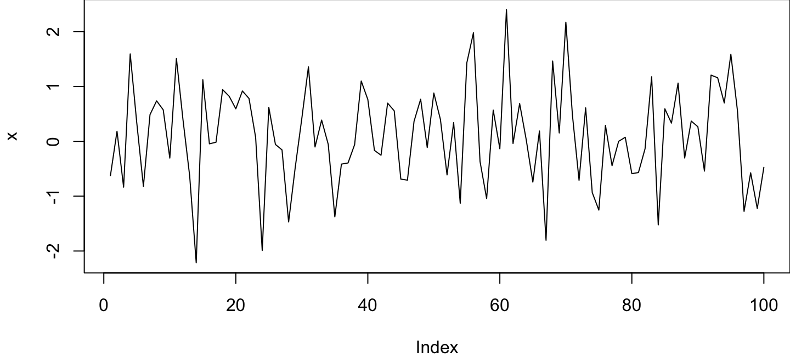

2023-12-04
Documenting dependencies
Documenting dependencies
- Critical for others to be able to reproduce your results
- R itself is pretty stable, but many packages are not especially years (and many version) later
- We’ll describe three increasingly complex (and more complete) ways of allowing others to access your exact dependencies:
- List packages
- Create a package library for your project
- Use a container
1. List packages
devtools::session_info()
─ Session info ──────────────────────────────────────────────────────────────────────────────────────────────── setting value version R version 4.3.1 (2023-06-16) os macOS Sonoma 14.1.1 system aarch64, darwin20 ui RStudio language (EN) collate en_US.UTF-8 ctype en_US.UTF-8 tz America/Los_Angeles date 2023-12-03 rstudio 2023.06.0+421 Mountain Hydrangea (desktop) pandoc 3.1.9 @ /opt/homebrew/bin/ (via rmarkdown) ─ Packages ──────────────────────────────────────────────────────────────────────────────────────────────────── package * version date (UTC) lib source cachem 1.0.8 2023-05-01 [2] CRAN (R 4.3.0) ... xtable 1.8-4 2019-04-21 [2] CRAN (R 4.3.0) yaml 2.3.7 2023-01-23 [2] CRAN (R 4.3.0) [1] /Users/username/Library/R/arm64/4.3/library [2] /Library/Frameworks/R.framework/Versions/4.3-arm64/Resources/library ───────────────────────────────────────────────────────────────────────────────────────────────────────────────
2. Create a package library for your project
Package renv

To get started (it automatically discovered loaded packages):
renv::init()
To save metadata on all packages and versions:
renv::snapshot()
To reproduce environment that you’ve saved:
renv::restore()
3. Use a container

- Docker and Singularity are popular options
- Reproduce your entire operating system, including all installed software
- Can be useful for software that is difficult to install or in environments that limit your ability to install software, like computer clusters
3. Use a container (cont.)
You can use an existing image. Many programs create them for users, check out https://hub.docker.com
Or make your own. Example: https://shorturl.at/pGT25
# start with a bare-bones ubuntu with mamba installed:
FROM condaforge/mambaforge:4.11.0-0
# install some basics:
RUN apt-get clean && \
apt-get update -y && \
apt-get install -y build-essential && \
apt-get install -y locales wget rsync unzip nano sudo pv cmake \
ocaml-nox zlib1g-dev libbz2-dev liblzma-dev libboost-all-dev \
libcurl4-openssl-dev
# add a conda environment with a bunch of packages:
COPY env-main.yml .
RUN mamba env create -q -f env-main.yml && \
rm env-main.yml && \
conda clean --all -y
# and so on, as much as you need
What method seems most appealing for your projects?
Creating reports
Reports - What and why?
- A mix of text, tables, figures, equations, etc. — alongside the code that created them.
- Can be used to share results to a few collaborators or as a final manuscript document (although smaller documents are more typical).
- By having code next to results, your analyses are easier to validate
We’re focusing on notebooks using RMarkdown, but Jupyter notebooks in python are also great.
R Markdown
- Markdown
https://www.markdownguide.org/basic-syntax/ plus R (or other) code - The code can be actually run with the output shown in the final document
- File extension is
.Rmd, and output can be many options - See cheatsheet on Canvas or here: https://rstudio.github.io/cheatsheets/rmarkdown.pdf

YAML header
-- title: "My report" author: "Your Name" date: "Today" output: pdf_document ---
Controls the output formatting and basic info about your report
Code chunks
Can be both blocks and inline!
```{r chunk-name}
set.seed(1)
x <- rnorm(100)
```
The mean is `r mean(x)`
The mean is 0.1088874
Setup code chunk
Added by default when creating a new Rmd file in RStudio
```{r setup, include=FALSE}
knitr::opts_chunk$set(echo = TRUE)
```
Sets default options for code chunks, including…
eval: Whether to evaluate a code chunk.echo: Whether to echo the source code in the output document.warning,message, anderror: Whether to show warnings, messages, and errors in the output document.include: Whether to include anything from a code chunk in the output document.fig.widthandfig.height: The (graphical device) size of R plots in inches.
More listed at https://yihui.name/knitr/options
Figures
This is a cool plot I made:
```{r chunk-name}
plot(x, type = "l")
```
This is a cool plot I made:

Tables
```{r iris-table}
iris |>
group_by(Species) |>
summarize(sepal_length = mean(Sepal.Length),
sepal_width = mean(Sepal.Width)) |>
knitr::kable(caption = "Mean sepal width and length for three species of _Iris_.")
```
| Species | sepal_length | sepal_width |
|---|---|---|
| setosa | 5.006 | 3.428 |
| versicolor | 5.936 | 2.770 |
| virginica | 6.588 | 2.974 |
Cross-referencing and citations
Cross-referencing
As you can see in table \@ref(iris-table)...
Citations
Add to your YAML header:
bibliography: references.bib csl: refstyle.csl
references.bibis a BibTeX file with all your referencesrefstyle.cslis a file specifying the citation style (see https://www.zotero.org/styles).
Let’s create reports for your projects
- File > New File > R Markdown…
- Insert name and title, select PDF, hit OK
Work on your own for a bit: Don’t try to include everything now; just outline what you want to include
Then pair up and discuss, see if there are ways to improve each other’s documents
More information
R Markdown: The Definitive Guide https://bookdown.org/yihui/rmarkdown/
Report writing for data science in R http://leanpub.com/reportwriting
bookdown: Authoring Books and Technical Documents with R Markdown https://bookdown.org/yihui/bookdown/
A Guide to Reproducible Code in Ecology and Evolution https://www.britishecologicalsociety.org/publications/better-science/